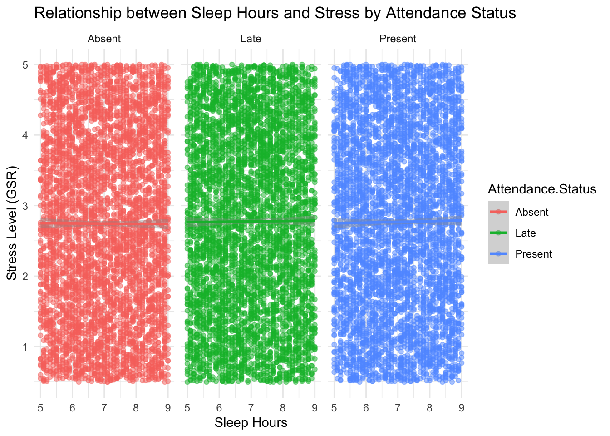

# Load required libraries
library(ggplot2)
library(dplyr)
Attaching package: 'dplyr'The following objects are masked from 'package:stats':
filter, lagThe following objects are masked from 'package:base':
intersect, setdiff, setequal, unionlibrary(tidyr)
library(viridis)Loading required package: viridisLite# Read the data
data <- read.csv("student_monnitoring_data.csv")
# 1. Calculate average stress levels by attendance status
avg_stress <- data %>%
group_by(Attendance.Status) %>%
summarise(
mean_stress = mean(Stress.Level..GSR.),
sd_stress = sd(Stress.Level..GSR.),
count = n()
)
# 2. Box plot of stress levels by attendance status
ggplot(data, aes(x = Attendance.Status, y = Stress.Level..GSR., fill = Attendance.Status)) +
geom_boxplot(alpha = 0.7) +
theme_minimal() +
labs(
title = "Distribution of Stress Levels by Attendance Status",
x = "Attendance Status",
y = "Stress Level (GSR)"
) +
theme(legend.position = "none")# 3. Violin plot with points
ggplot(data, aes(x = Attendance.Status, y = Stress.Level..GSR., fill = Attendance.Status)) +
geom_violin(alpha = 0.5) +
geom_jitter(width = 0.2, alpha = 0.2) +
theme_minimal() +
labs(
title = "Stress Level Distribution by Attendance Status",
x = "Attendance Status",
y = "Stress Level (GSR)"
) +
theme(legend.position = "none")# 4. Bar plot of average stress levels
ggplot(avg_stress, aes(x = Attendance.Status, y = mean_stress, fill = Attendance.Status)) +
geom_bar(stat = "identity") +
geom_errorbar(aes(ymin = mean_stress - sd_stress,
ymax = mean_stress + sd_stress),
width = 0.2) +
theme_minimal() +
labs(
title = "Average Stress Levels by Attendance Status",
x = "Attendance Status",
y = "Average Stress Level (GSR)"
) +
theme(legend.position = "none")# 5. Create a summary table
summary_stats <- data %>%
group_by(Attendance.Status) %>%
summarise(
Count = n(),
Mean_Stress = mean(Stress.Level..GSR.),
Median_Stress = median(Stress.Level..GSR.),
SD_Stress = sd(Stress.Level..GSR.),
Min_Stress = min(Stress.Level..GSR.),
Max_Stress = max(Stress.Level..GSR.)
)
print("Summary Statistics:")[1] "Summary Statistics:"print(summary_stats)# A tibble: 3 × 7
Attendance.Status Count Mean_Stress Median_Stress SD_Stress Min_Stress
<chr> <int> <dbl> <dbl> <dbl> <dbl>
1 Absent 5002 2.74 2.72 1.31 0.5
2 Late 5032 2.78 2.78 1.30 0.5
3 Present 4966 2.77 2.79 1.30 0.5
# ℹ 1 more variable: Max_Stress <dbl># 6. Perform ANOVA test
anova_result <- aov(Stress.Level..GSR. ~ Attendance.Status, data = data)
print("\nANOVA Results:")[1] "\nANOVA Results:"print(summary(anova_result)) Df Sum Sq Mean Sq F value Pr(>F)
Attendance.Status 2 3 1.352 0.797 0.45
Residuals 14997 25421 1.695 # 7. Additional analysis: Relationship with sleep hours
ggplot(data, aes(x = Sleep.Hours, y = Stress.Level..GSR., color = Attendance.Status)) +
geom_point(alpha = 0.5) +
geom_smooth(method = "lm") +
facet_wrap(~Attendance.Status) +
theme_minimal() +
labs(
title = "Relationship between Sleep Hours and Stress by Attendance Status",
x = "Sleep Hours",
y = "Stress Level (GSR)"
)`geom_smooth()` using formula = 'y ~ x'
# Calculate correlation between sleep and stress for each attendance status
correlations <- data %>%
group_by(Attendance.Status) %>%
summarise(
correlation = cor(Sleep.Hours, Stress.Level..GSR.)
)
print("\nCorrelations between Sleep Hours and Stress Level by Attendance Status:")[1] "\nCorrelations between Sleep Hours and Stress Level by Attendance Status:"print(correlations)# A tibble: 3 × 2
Attendance.Status correlation
<chr> <dbl>
1 Absent -0.00292
2 Late 0.00480
3 Present 0.00925